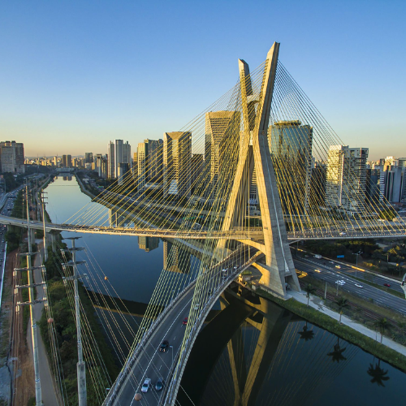

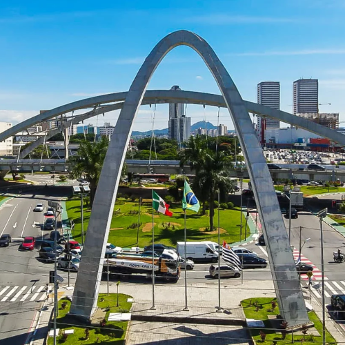


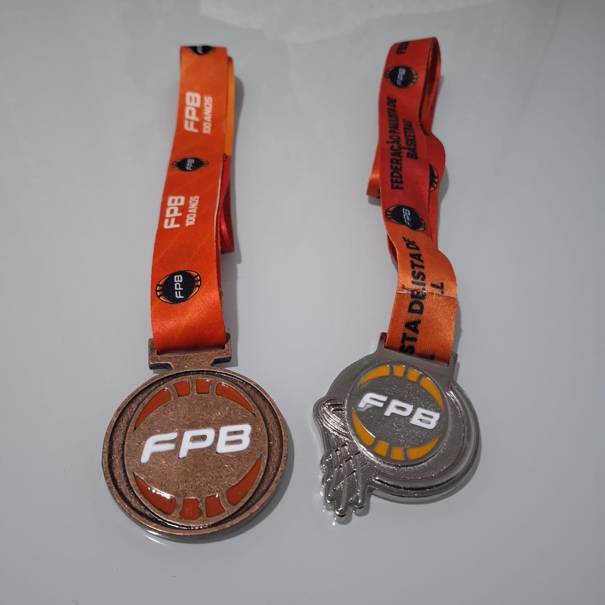
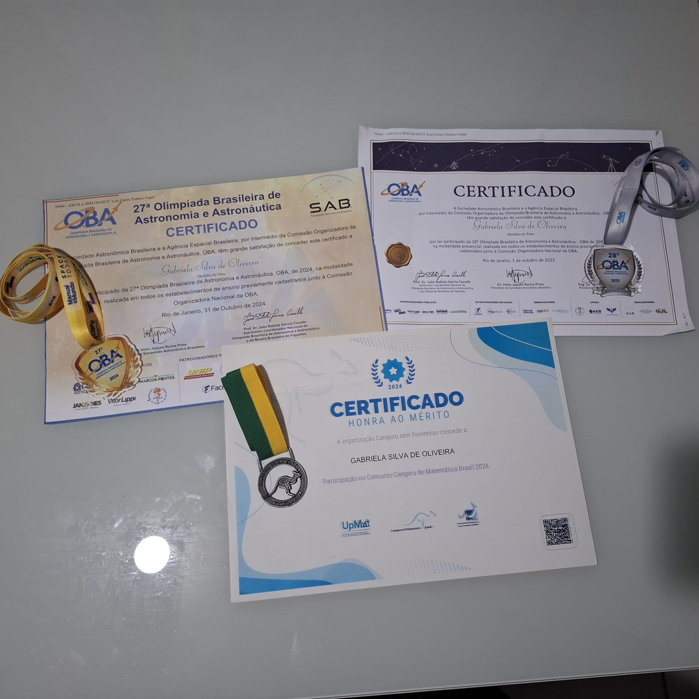
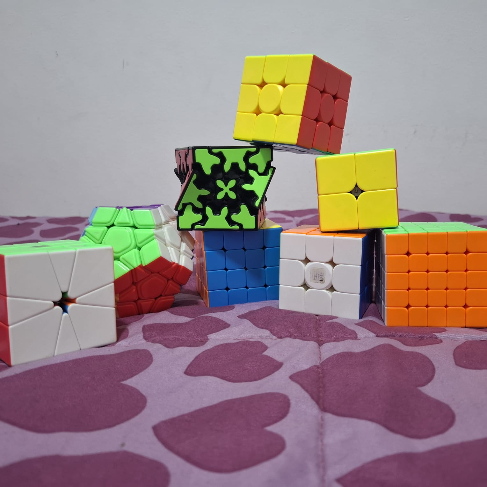
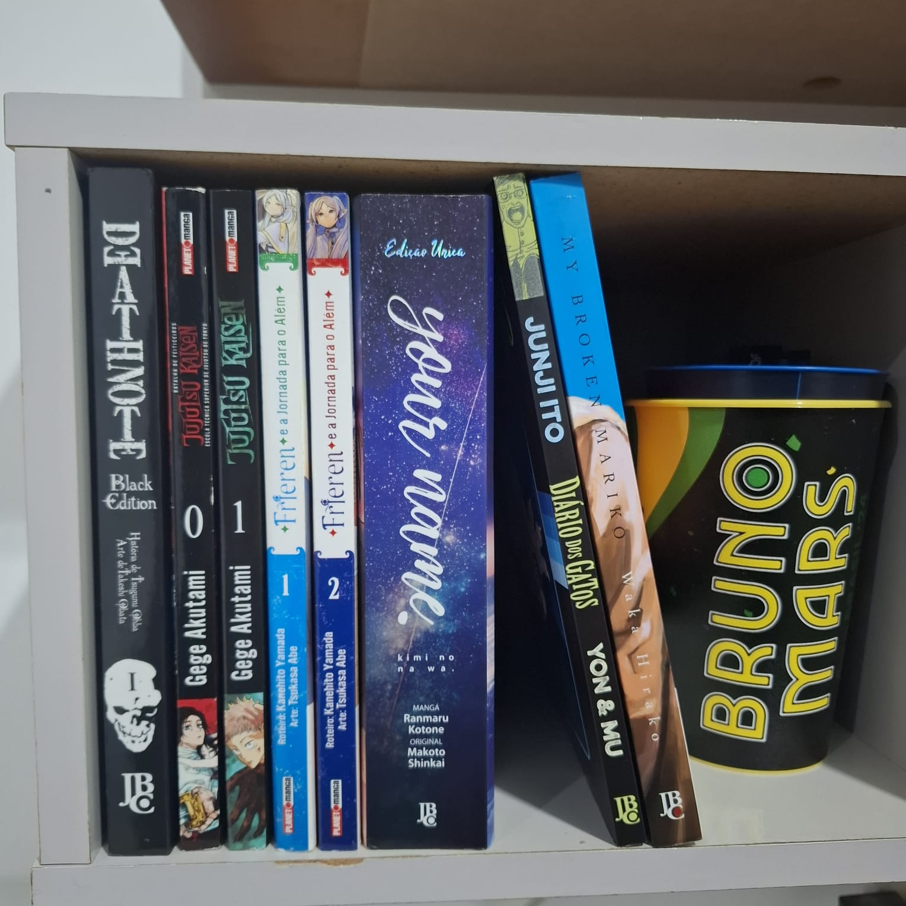
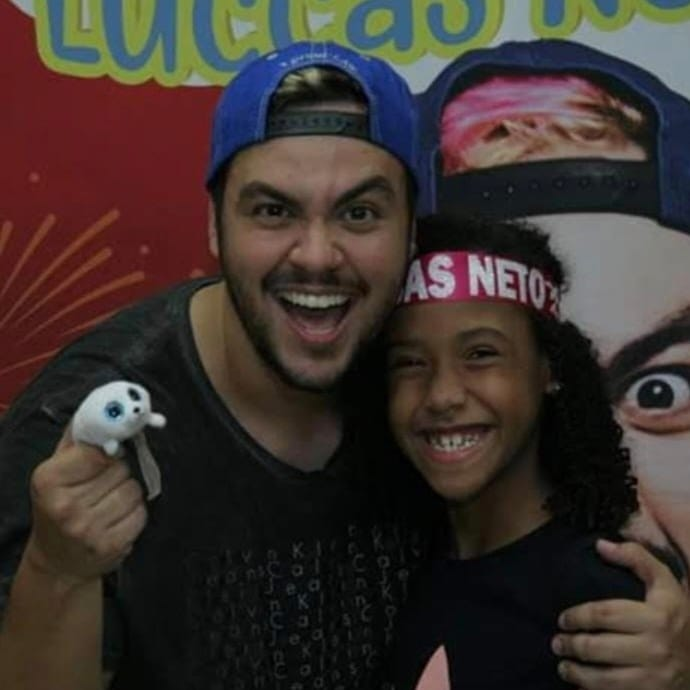
Em janeiro de 2014, com 2 anos viajei para a Argentina com minha família. Não tenho memórias do país devido a minha idade na época, mas tenho as fotografias tiradas pela minha mãe que registraram os momentos vividos nesse local. Com minha família, conheci locais como o Obelisco de Buenos Aires e a Casa Rosada em Buenos Aires, fui a um zoologico na cidade de Luján, visitei o Parque de La Costa na cidade de Tigre e ainda experimentei o famoso churrasco argentino no clássico restaurante La Estancia na capital argentina. Para saber mais pontos turísticos do país clique aqui.
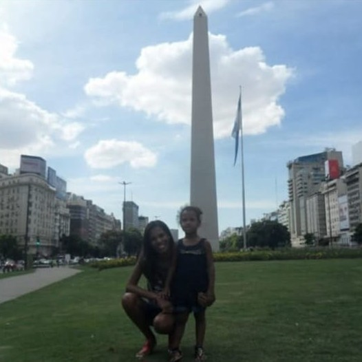
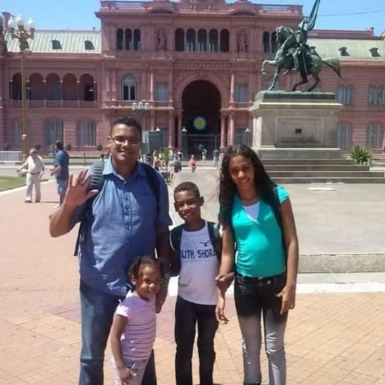
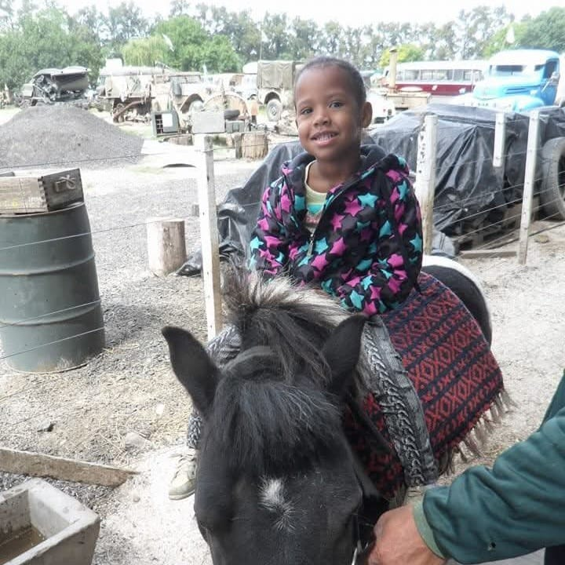
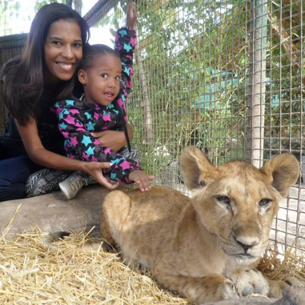
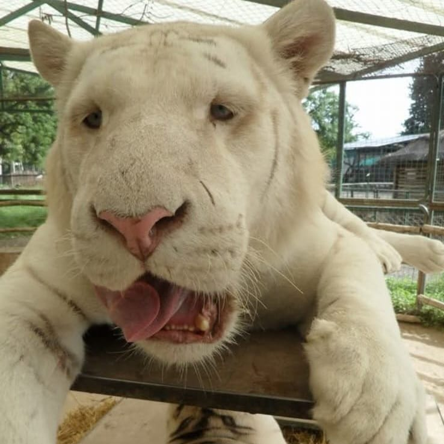
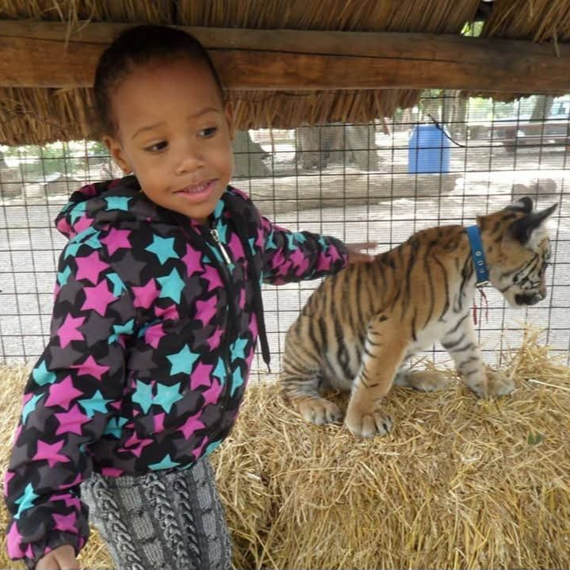
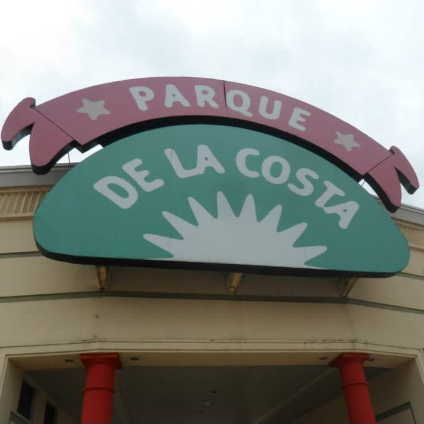
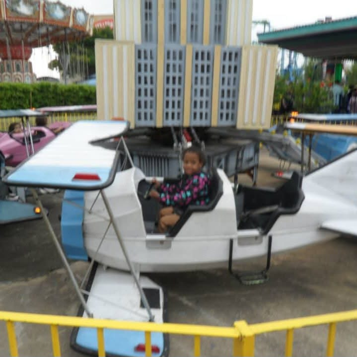
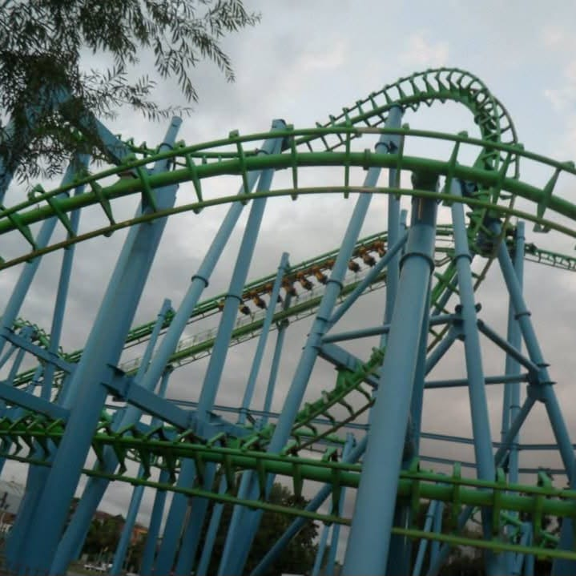
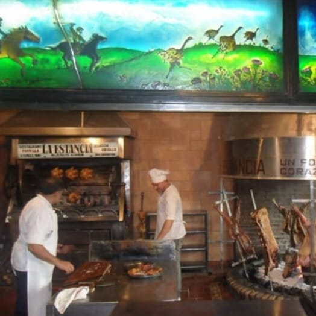
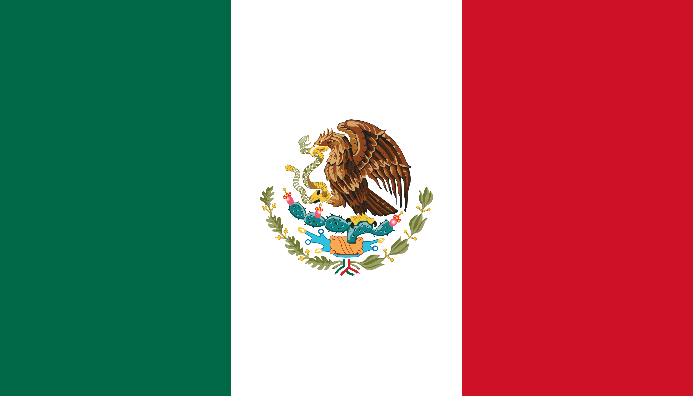
Em janeiro de 2021, com 9 anos viajei para o México com minha família. No total ficamos 13 dias no país. Passamos 3 dias no Resort Famingo em Cancun, e nesses dias conhecemos o centro da cidade, aproveitamos a Playa Delfines, experimentamos a culinária mexicana no restaurante Tacun e no restaurante da franquia Bubba Gump e muito mais! Depois de Cancun, ficamos 5 dias na cidade Playa del Carmen. Lá conhecemos o parque natural Xcaret, onde vimos muito da cultura mexicana, visitamos a cidade de Tulum, conhecemos e aprendemos sobre a história maia no Chichén Itzá (uma das Novas 7 Maravilhas do Mundo), aproveitamos para conhecer A Quinta Avenida, fomos em várias praias e em dois Cenotes, experimentos mais da culinária e muito mais! Já nos últimos 5 dias fomos para o resort e em um dia visitamos o parque de tirolesa Xplor. Para saber mais pontos turísticos mexicanos clique aqui.
Na virada do ano 2022 para 2023, fiz o cruzeiro Costa Firenze com meus pais. Saí de Santos fui até
Conheci esse local do interior paulista próximo do Mato Grosso em setembro de 2025 para um jogo contra o time (que não existe mais) Estrela d'Oeste. Foi uma viagem de 2 dias com o meu time e levamos 10 horas para ir e 10 horas para voltar. Nos hospedamos na cidade vizinha, Fernandópolis. O lugar tem uma população de 9.417 habitantes. O município paulista existe desde 1938. Para saber mais sobre Estrela d'Oeste clique aqui!
Essa é uma cidade que por mais que nosso time tenha ido só 2 vezes, vivemos muitas histórias. Barretos é uma cidade do interior paulista. Fomos para Barretos pela primeira vez em 2024 e depois fomos de novo em 2025. Nunca ganhamos do time dessa cidade, mas a última vez chegamos bem perto do resultado bom. Apesar de levarmos uma média 6 horas para ir e 6 horas para voltar, na primeira vez que fomos ao local presenciamos um incêndio na única estrada que tem para ir para São Paulo, por isso tivemos que voltar para o centro do local. Barretos é conhecida pelo rodeio anual realizado na cidade. O local tem uma população de 126.957 habitantes. Para saber mais sobre Barretos clique aqui!
Tupã é uma cidade do interior paulista que já fui 3 vezes com o meu time para jogar contra o time da cidade. Nunca vencemos elas, esse time foi o campeão de todos campeonatos paulistas dos últimos anos. Vivemos muitas boas histórias em Tupã. Em 2024, fomos a equipe 3º colocada do campeonato estadual e, tanto o jogo quanto a premiação foram realizados em Tupã, pois a equipe da casa teve a melhor campanha. A cidade conta com uma população de 65.416 habitantes. Uma curiosidade é que o local é o maior produtor de amendoim de SP. Para saber mais sobre Tupã clique aqui!